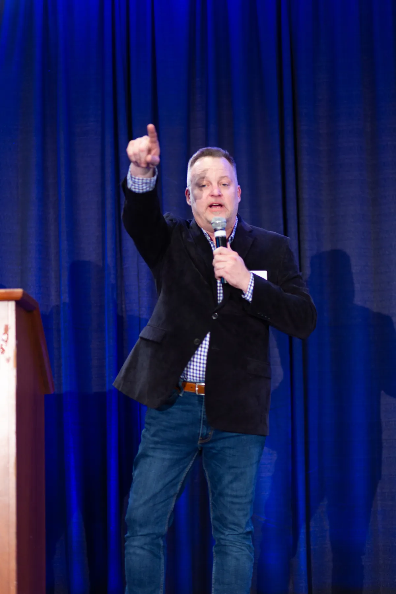
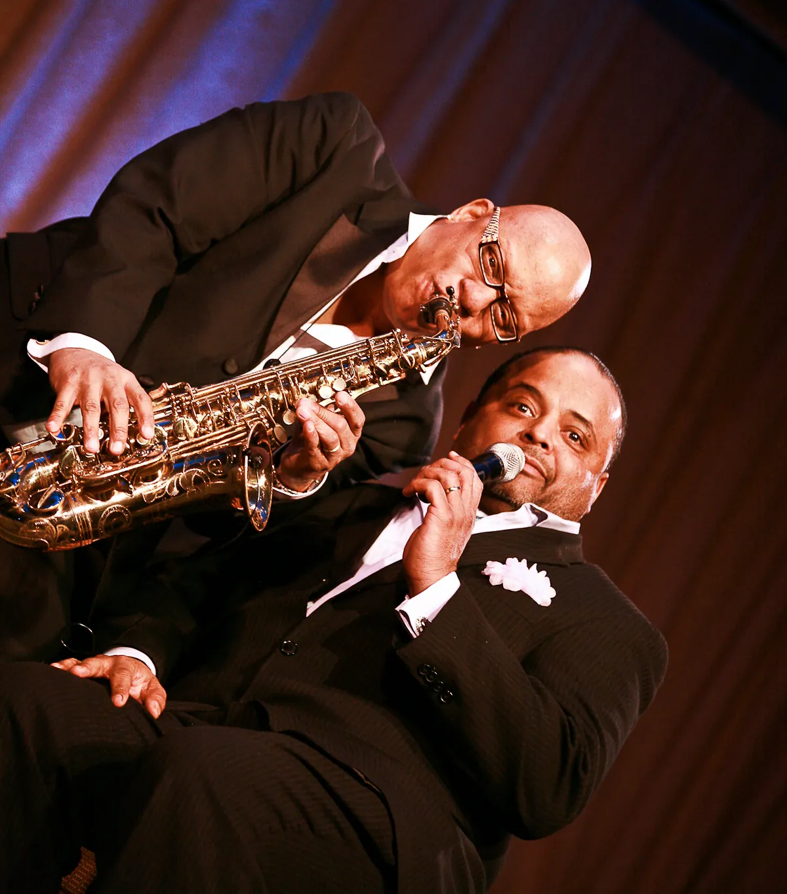
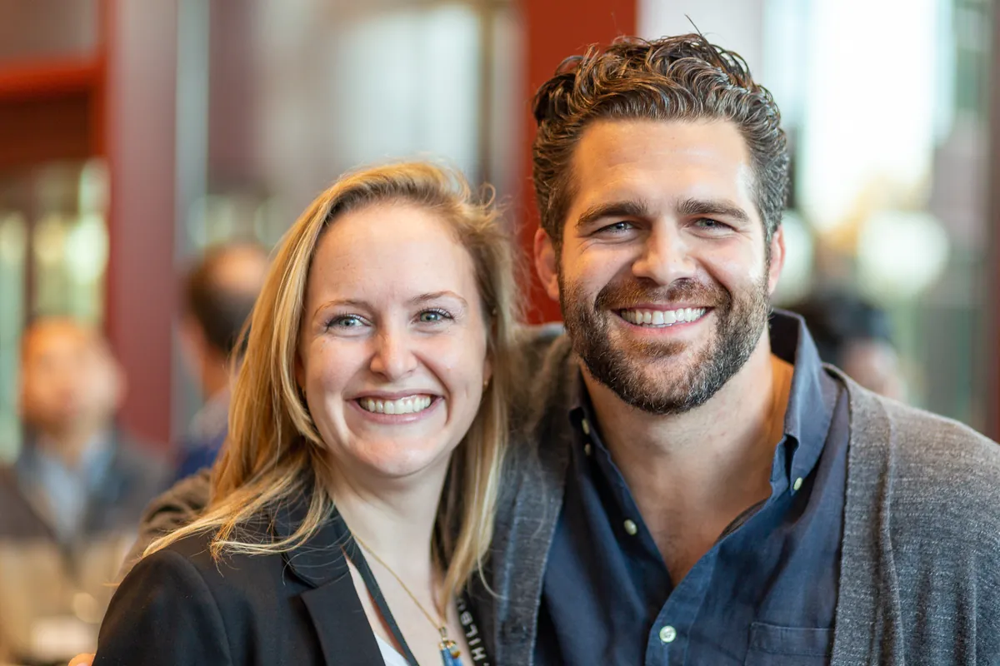
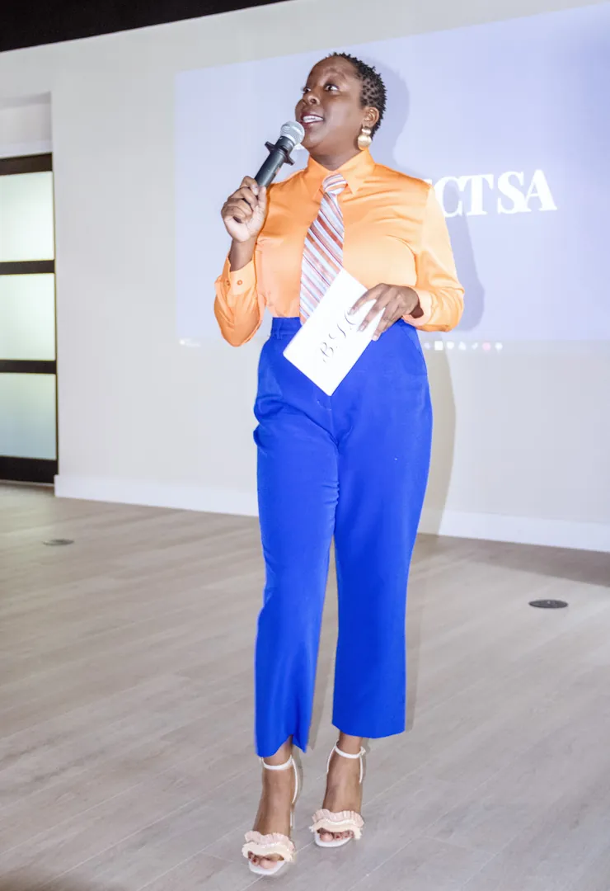

Event Photography in San Antonio, Texas
Corporate, private and community event photography in San Antonio, Austin, Houston and Dallas. Quiet, unobtrusive coverage of the moments people remember.




Community event, press day
Events
Event photography, done one story at a time.
The McKinnis Edit photographs corporate, private and community events in San Antonio and across Texas. Coverage is quiet and unobtrusive, so guests stay in the moment, and you get back a complete, edited story of the day: speakers, guests, details and the candid moments in between.
- Best for
- Conferences, launches, galas, press days, community events
- Where
- San Antonio, Austin, Houston, Dallas
- Delivered
- Online gallery of edited, high-resolution images
- Booking
- Choose a package or send your date for a quote
Portfolio
Events portfolio
Select any frame to view it larger.
What kinds of events do you photograph?
Corporate events, conferences, product launches, galas, press days, private celebrations and community events.
Will the photographer get in the way?
No. Coverage is deliberately unobtrusive. Michael works quietly around the room so guests and speakers stay natural.
How many hours of coverage do I need?
It depends on the run of show. Share your schedule and Michael will recommend coverage that captures the key moments without paying for downtime.
How fast can we get photos for social or press?
Your full edited gallery is delivered within 1 to 2 weeks of your event.
Do you cover events outside San Antonio?
Yes. The studio regularly covers events in Austin, Houston and Dallas.
Contact
Let's create together
Tell us about your events project and when you need images. We'll come back with a plan, a date and a clear price.
- StudioSan Antonio, Texas
- Phone210-376-1166
- Emailthemckinnisedit@gmail.com